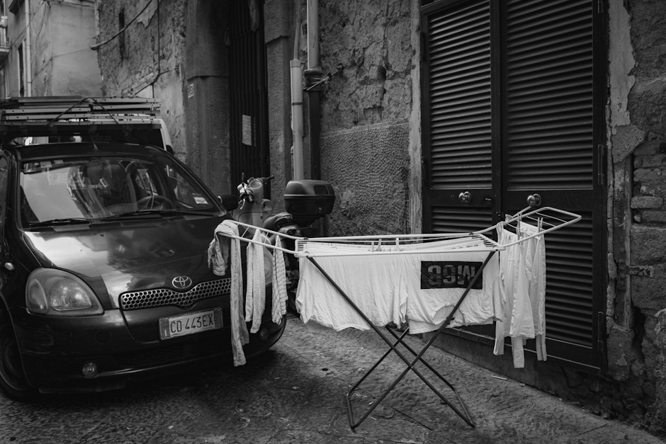
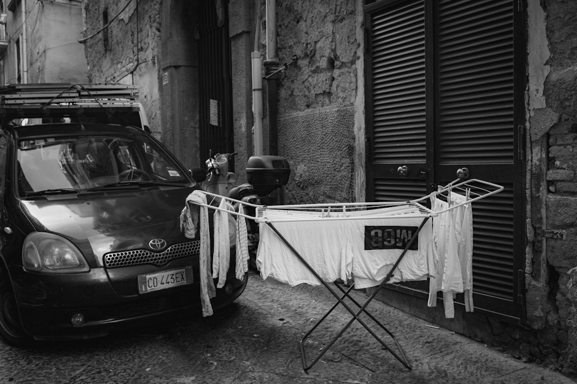

Quartieri Spagnoli
Quartieri Spagnoli, as known as the Spanish Quarter, is a historical part of the city of Naples that originated in the sixteenth century when the Spanish conquered the Neapolitan kingdom.
This district was built to house Spanish military garrisons aimed at suppressing the revolt of the Neapolitan population.
Since its inception, the Spanish Quarter has become a center of crime and prostitution and has always been a social problem zone.
Neighborhoods built on a hillside are characterized by a grid of streets, alleys, and staircases decorated by hanging sheets and linens.
About 14,000 people live in Quartieri today.


 
